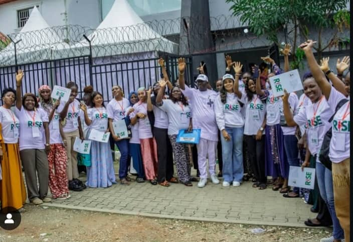
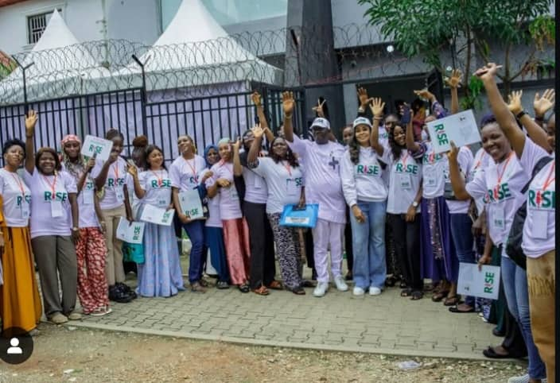

Funmilayo Ransome-Kuti
Pioneer of women's resistance & leader of the Abeokuta Women’s Union.

From pre-independence market movements to modern-day leaders — celebrating those who shaped Nigeria and continue to empower future generations.
Pioneer of women's resistance & leader of the Abeokuta Women’s Union.

Market mobilizer and political organizer for women's rights and representation.

Economist and global leader, Nigeria’s former Finance Minister and WTO Director-General.

G4EP Chairman — championing women's empowerment and digital training.
Before the Nigerian flag was first raised on October 1st, 1960, women like Funmilayo Ransome-Kuti and Margaret Ekpo were already fighting battles for equality and justice. Today, as we celebrate independence, we honor their courage, and pledge to continue building a Nigeria where every girl’s dream can rise as high as the eagle on our flag.
Funmilayo Ransome-Kuti, often called the Lioness of Lisabi. Born in Abeokuta in 1900, she was no ordinary woman—she was the first Nigerian woman to drive a car, but more importantly, she drove a movement. At a time when colonial taxes crushed market women, she led thousands in protest, speaking boldly against injustice. Her activism shook the system so much that the king himself had to step down for a while. Funmilayo’s fight was not just for women in Abeokuta, but for the freedom and dignity of all Nigerians.
Gambo Sawaba (1933–2001) was a fearless northern Nigerian activist who defied tradition and colonial authority to demand justice for women. As a teenage organizer, she led bold campaigns for girls’ education, workers’ rights, and the right of northern women to vote, enduring repeated arrests and imprisonment for her activism. Her courage made her a powerful voice in the movement that carried Nigeria into independence.
From the world of politics and protests, we move to the corridors of finance and global leadership, where Ngozi Okonjo-Iweala stands tall. Born in 1954 in Delta State, Ngozi’s sharp mind carried her from Harvard to the World Bank, and back home as Nigeria’s Finance Minister. She became known for battling corruption and insisting that public funds should serve the people, not just the powerful. Today, she sits at the top of world trade as the first African and first woman to lead the World Trade Organization, proving that a Nigerian woman can influence not just her country, but the entire globe.
Contemporary champions like Hon. Dr. Judith Mayen Etuk Ogbara who has supported over 500 female students in Akwa Ibom State in the past seven years by sponsoring their WAEC and JAMB forms purchase. She has promoted the educational advancement of the girl-child in the country, carrying the legacy into global leadership and community empowerment.

Founder & CEO of Herconomy, a digital platform for female entrepreneurs & professionals; helps them access grants, mentorships, jobs. She has been active in broader youth and women’s development networks, advisory groups etc.

Co-founder of PiggyVest, one of Nigeria’s biggest digital savings and investment platforms. Co-founder of Feminist Coalition, a group advocating for women’s rights and social justice. Recognized as one of Africa’s brightest young innovators.

Successful entrepreneur and philanthropist. She is currently the group managing director of The Rose of Sharon Group and also serves as executive vice chairman of Famfa Oil Limited.

Chairperson—G4EP Initiative, supporting digital growth for women.
 

This site was created by participants of the G4EP Digital Training,under the R.I.S.E project. A class project celebrating Nigeria Independence and the role of Nigerian women across history.
Email: info@geeeep.com.ng
Follow our class: G4EP@Instagram